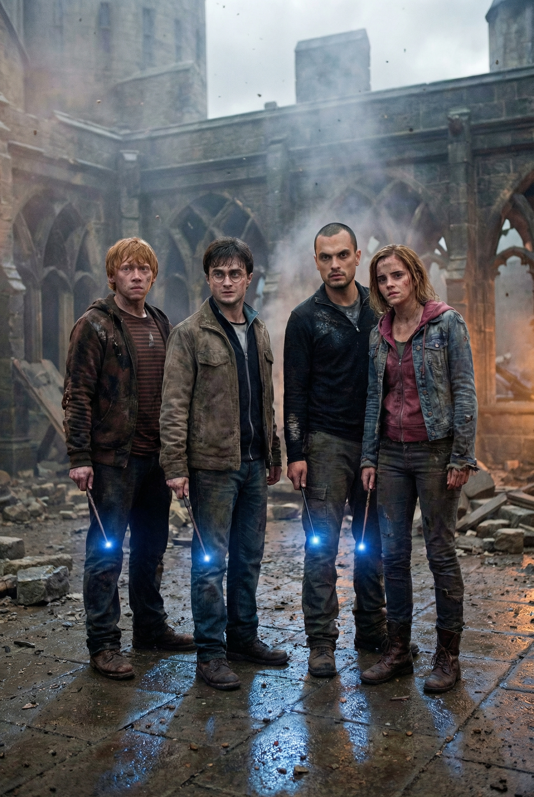
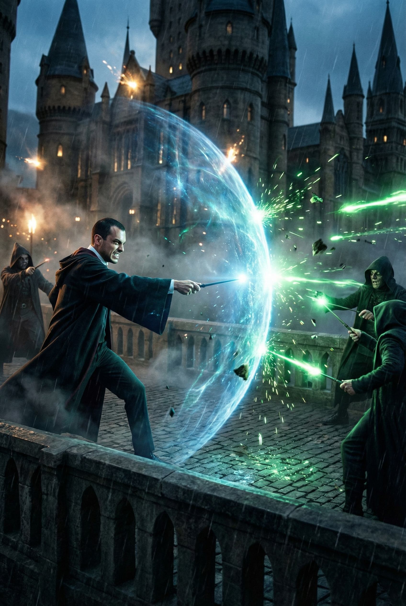

Capítulo 1
Ricardo se posiciona firmemente ao lado de Harry, Rony e Hermione nos escombros fumegantes do pátio de Hogwarts. O ar está pesado com o cheiro de magia e cinzas enquanto os Comensais da Morte rompem as defesas finais sob um céu obscurecido por dementadores.

Capítulo 2
Gigantes e aranhas colossais surgem da névoa. Ricardo levanta sua varinha com determinação, conjurando um escudo 'Protego Maxima' que brilha como cristal, repelindo uma saraivada de feitiços fatais vindos das hordas de Voldemort.

Capítulo 3
O próprio Lorde das Trevas emerge das sombras com seus olhos vermelhos fixos em Harry. Quando a pressão da aura de Voldemort quase faz o grupo recuar, Ricardo dá um passo à frente, sua varinha emitindo uma luz branca ofuscante que desafia a escuridão.
Capítulo 4
As varinhas de Harry e Voldemort se conectam em um duelo final de pura energia. Ricardo coloca a mão no ombro de Harry, canalizando sua própria força vital para estabilizar o feixe de luz enquanto o chão sob seus pés racha e explode.

Capítulo 5
Voldemort se desintegra em cinzas que o vento carrega. Ricardo, exausto e coberto de poeira de batalha, observa o primeiro raio de sol tocar as torres de Hogwarts ao lado de seus amigos, celebrando a liberdade do mundo bruxo.